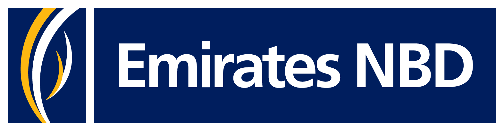
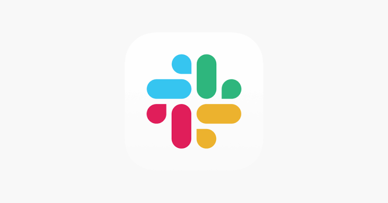
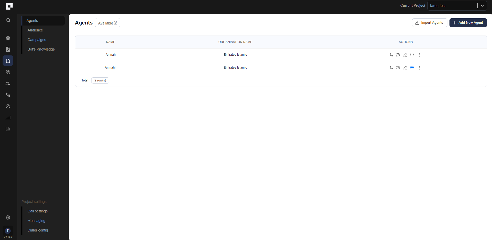

Training Overview
This 6-day program prepares you to independently create, test, improve, and own AI voice agents at ClearGrid. By the end, you will be ready to contribute from Day 1.
| Day | Focus |
|---|---|
| Day 1 | Your role, the team, lenders & partners, project ownership, supporting teams, and how we communicate |
| Day 2 | ClearVoice — the platform we use to build, configure, test, and monitor agents |
| Day 3 | Prompt architecture — how we design and write voice agent prompts |
| Day 4 | The full build and launch cycle: self-testing, QA handoff, project owner sign-off, and go-live |
| Day 5 | Post-launch: live call monitoring, applying improvements, and owning your agents end-to-end |
| Day 6 | Practical knowledge check (50 MCQ — pass at 75%+) |
What You Will Be Able to Do
- Understand the ClearGrid voice agent business and the lenders we work with
- Know the team structure and who to go to for every type of issue
- Use ClearVoice to build, configure, and monitor agents
- Write strong, production-ready prompts using the ClearGrid structured template
- Run pre-live stress tests and apply QA feedback
- Monitor live calls and continuously improve agent performance
- Own your agents from first draft to post-launch improvement
End-to-End Workflow
This is the complete lifecycle of an AI Prompt Engineer at ClearGrid — from first briefing to continuous improvement.
How Prompts Drive the Business
The prompt is the brain of the agent. Everything the agent says, how it handles objections, when it escalates, and what outcome it logs — is entirely determined by how the prompt is written.
Strong Prompt
- More right-party contacts (RPC)
- More payment promises collected (PTP)
- Fewer unnecessary escalations
- Calls that sound natural and compliant
Weak Prompt
- Missed payment commitments
- Compliance breaches
- Customer complaints
- Agents that break under pressure
The prompt is the product. Writing it well is the job.
Role, Team & Communication
Your role · The team · Lenders & partners · Project ownership · Supporting teams · Slack · Notion & Asana · Daily meetings
AI Prompt Engineer at ClearGrid
You are responsible for the full lifecycle of AI voice agents that collect payment promises from customers on behalf of ClearGrid's lender and bank partners. This is not a passive role — you own every agent you create.
| Responsibility | What It Means |
|---|---|
| Create Prompts | Write new voice agent prompts from scratch using the ClearGrid structured template |
| Revamp Agents | Restructure and improve existing agents based on performance data and call analysis |
| Test Agents | Run self-testing calls before QA and catch issues before they go live |
| Analyze Transcripts | Review live call transcripts to find missing scenarios, logic gaps, and improvement opportunities |
| Review Metrics | Track RPC rate, PTP rate, call duration, and escalation rate and act on the data |
| Apply QA Feedback | Implement notes from the QA team and re-test before moving forward |
| Monitor Live Agents | Continuously listen to live calls and keep agents performing at target |
What Is Expected From You
- Every prompt must be tested before it goes to QA
- Every change must be based on data — calls, transcripts, and metrics
- Every active agent is your responsibility, even after it goes live
- You communicate clearly on Slack, update Asana tickets, and document on Notion
- You attend both morning calls every day
Meet the Team
Head of Conversation Design
Oliver
Leads the team, sets standards, and owns the overall direction of how ClearGrid agents are designed and improved.
The Prompt Team
| Name | Role |
|---|---|
| Tareq | AI Prompt Engineer |
| Daniah | AI Prompt Engineer |
| Sara | AI Prompt Engineer |
| Awsam | AI Prompt Engineer |
Tasks are shared, discussed, and tracked as a team via #prompt-team
Lenders & Partners
ClearGrid builds voice agents for lenders and banks across the region. Each partner has its own rules, tone expectations, payment channels, approved consequences, and customer profiles.
Never assume that a rule or approach from one lender applies to another.

Emirates NBDBank Emirates IslamicBank
Emirates IslamicBankBNPL vs. Bank
BNPL (Buy Now Pay Later) lenders like Tamara and Tabby deal with installment-based consumer purchases. Customers may be younger, digital-first, and amounts tend to be smaller.
Banks like Emirates NBD, Mashreq, and HSBC deal with credit products, loans, and cards. Escalation paths and compliance requirements are more complex.
Project Ownership
Every lender project has an assigned project owner who approves the agent for go-live and is the final decision-maker on agent design.
What the Project Owner Does
- Reviews the agent after self-testing and QA
- Gives the green light (or feedback) before go-live
- Makes high-level decisions about the agent design and lender requirements
- Is the first point of contact for anything specific to their portfolio
UAE agent → Sami | KSA agent → Faisal | Banking agent → Sami Salti
Supporting Teams
Engineering Team
Sandeep · Praveen · Sameer Soni
Owns and maintains ClearVoice and the technical infrastructure. Handles platform bugs, data pipeline issues, API integrations, and anything requiring backend work.
Reach them for: Platform issues, technical agent errors, data pipeline investigations.
QA Team
Independent testing checkpoint before any agent goes live. Runs structured test calls, scores against a QA sheet, and provides written feedback.
QA does not build the prompt — they are a separate quality layer. Reached via #ai-qa.
Product Team
Owns the product roadmap and translates business requirements into features and priorities, bridging the gap between stakeholders and engineering.
Data Team
Responsible for everything regarding data — pipelines, analytics, reporting, and the infrastructure that powers agent performance insights.
Abdul Saboor, Usamah, and Karol serve as Data Engineers.
Journey Builder — Noha
A journey is the technical setup that connects the voice agent to real customer data, so calls can be triggered on schedule. Noha sets up the data flow, the trigger, and the payload structure.
If an agent is not live and there are no calls being triggered, the first person to reach is Noha. It is almost always a journey issue, not a prompt issue.
Communication — Slack

Slack is the team's primary communication tool. You can reach anyone on Slack.
Notion & Asana
Notion — Documentation Hub
Everything that needs to be documented lives on Notion. Always check Notion before building a new prompt.
- Conversation designs per client
- Client-specific rules and reference material
- All project trackers
- Prompt templates and structural guides
- Voice and style guides per partner
- Handover documents and revamping plans
Asana — Task Management
New prompt tickets:
- Comment when passed to QA
- Comment when launched
- Comment on changes from original design
Fix tickets:
- Comment describing what was changed
- Comment when fix went live
When done → mark complete → move to Done column.
Check Asana daily. Keep your tickets updated after every milestone.
Daily Meetings
Performance Call
| Who | Everyone (company-wide) |
| Purpose | Daily performance review, strategic announcements, and goal alignment |
Includes broader stakeholders and leadership. Attend, listen, and note anything relevant to your work.
Prompt Team Morning Catchup
| Who | Prompt team |
| Format | Daily stand-up |
Agenda every morning:
- Yesterday's wins — what did you complete?
- Today's plan — what are you working on?
- Blockers — anything stopping you?
- Task board review — assign / prioritize / urgent
Come prepared. If you have a blocker, this is the moment to surface it.
ClearVoice Configuration
What is ClearVoice · Dashboard · Projects · Agents · Agent Settings · Call History
What Is ClearVoice?
ClearVoice is one of ClearGrid's own products. It is the platform AI Prompt Engineers use to:
| Action | What It Means |
|---|---|
| Create | Build new voice agents and configure them for a lender |
| Configure | Set voice, model, language, gateway, and all agent settings |
| Test | Run real inbound test calls before go-live |
| Monitor | Check live projects and daily call volumes |
| Review | Read call transcripts and listen to recordings after go-live |
Getting a ClearVoice setting wrong — even one — can break the agent, route calls to the wrong destination, or cause unexpected behavior. Configuration is part of the job.
Dashboard & Project Queues
Dashboard
The first screen on login. Gives a high-level overview of active projects, call volumes, and activity. Use it to navigate to Project Queues, Projects, or Call History.

Project Queues
Shows all live and active projects in ClearVoice.
- See which projects are currently running
- Check how many calls are being triggered per project daily
- Spot drops, spikes, or unexpected changes in call volume

If call volume for a live agent stops or drops — Project Queues is the first place to check.
Projects Page
Shows all projects inside ClearVoice — both live and non-live.

How Projects Are Organized
Projects represent a specific campaign or deployment for a lender. Inside each project, you create and manage multiple agents.
Every client must have a dedicated folder in ClearVoice that contains all of their projects.
Common Mistakes to Avoid
- Creating an agent under the wrong project
- Not organizing projects inside a client folder
- Mixing live and test agents in the same project without clear naming
The Agent
Inside each project you can create agents. You can name them anything and create as many as needed.

What You Can Do From the Agent View
- Edit the prompt directly in the agent editor
- Trigger test calls — inbound test calls to stress-test your prompt in real conditions
- Check agent status — whether it is live or in testing mode
- Review recent call logs for that specific agent
Agent Settings

| Setting | What It Controls |
|---|---|
| Voice | The text-to-speech voice model |
| LLM Model | The language model powering the agent's reasoning |
| ASR | Automatic Speech Recognition — converts customer speech into text |
| Temperature | Controls response consistency. Lower = more deterministic. |
| Language | The language and dialect the agent operates in |
| Gateway | The SIM / telephony line the agent uses to make calls |
What Is the Gateway?
The Gateway is like the SIM card the agent uses to call customers. It determines which number appears on screen, which country the call routes through, and which carrier is used.
Must be specified correctly for each lender and country (KSA / UAE). Wrong gateway = wrong number = compliance breach.
What Is ASR?
ASR = Automatic Speech Recognition
The technology that listens to what the customer says and converts their spoken words into text the language model can process.
ASR quality directly affects how well the agent understands mixed-language calls, accents, and noisy environments.
Call History Page
Where you review calls after they happen — during testing and after go-live.

What You Can Do Here
- Filter by date to find calls from a specific period
- Filter by agent to narrow to a specific deployment
- Read full call transcripts turn by turn
- Listen to recordings to hear the call as it happened
- Search by UUID to find a specific call
What Is a UUID?
Every call in ClearVoice is assigned a unique identifier called a UUID. Example:
3f7a1bc2-94de-4e08-b6a1-2d305f9c8e10
When you need to share a specific call with the team, Engineering, or QA — reference it by UUID. You can search by UUID directly in the Call History page.
Prompt Architecture
Definitions · Prompt types · Metrics · Template · Turn loop · Call states · Triggers
Key Definitions
These terms come up in every conversation, every ticket, and every QA review. Know them all.
| Term | Definition |
|---|---|
| RPC | Right Party Contact — The agent confirmed it is speaking with the correct person. Nothing about the account is disclosed until RPC is confirmed. |
| NRPC | Non-Right Party Contact — Cannot confirm the correct person. The call ends cleanly with zero account detail. |
| PTP | Promise to Pay — The customer commits to paying on a specific date. The primary outcome the agent is designed to collect. |
| BP | Broken Promise — Customer previously made a PTP but did not pay. |
| RTP | Refuse to Pay — Customer explicitly refused to pay. |
| DNC | Do Not Call — Flag marking a customer who must not be called again. |
| BNPL | Buy Now Pay Later — Installment-based consumer lending (Tamara, Tabby). |
| ASR | Automatic Speech Recognition — Converts customer speech into text. |
| A2A | Agent to Agent — Call stays within the AI system. |
| A2H | Agent to Human — Call escalates to a human agent (disputes, hard stops, customer requests). |
| Post Call Analysis | Reviewing transcripts and recordings after a call to find gaps and improvement opportunities. |
Types of Prompts
The purpose of the call determines the type of prompt you write. Each type has a different tone, strategy, and objective.
| Type | What It Is |
|---|---|
| PTP Promise to Pay | The most common type. Calls a customer with an outstanding balance. Goal: collect a firm payment commitment on a specific date. |
| BP Broken Promise | Targets customers who previously made a PTP but did not pay. Acknowledges the prior commitment and re-secures a new one. Slightly firmer in approach. |
| RTP Refuse to Pay | Targets customers who explicitly refused. Focuses on consequences and approved options — not on repeating the same negotiation. |
| Initial | The very first call to a customer. Introduces the situation fresh. Tone is more neutral and informational to start. |
| Reminder | Sent approximately 24 hours before a scheduled payment date. Confirms the upcoming commitment — it is confirmation, not collection. |
Metrics That Matter
Every agent is measured against these targets. Know them. Act on them.
Why These Numbers Matter
- Low RPC rate → data problem, or identity-gate issue in the prompt
- Low PTP rate → agent reaching the right person but not converting — almost always a prompt problem
- Calls too long → agent is looping or being too verbose
- High escalation rate → missing trigger coverage or incorrect hard-stop handling
Metrics tell you where the problem is. Transcripts tell you what the problem is.
Prompt Architecture — The Template
All ClearGrid prompts follow a standardized 8-section template. This is mandatory — not optional.
| Section | What It Does |
|---|---|
| Header | Agent identity, goal, fallback, output format, and tone |
| 1. Turn Loop | Fixed execution order the agent runs before every single response |
| 2. Global Absolutes | Non-negotiable rules that apply in every state, at every point in the call |
| 3. Voice & Variables | How the agent sounds and adapts; all data variables with fallbacks |
| 4. Call States | The conversation stages — each is a self-contained rulebook with defined routes |
| 5. Trigger Lookup | Situation-specific responses that override the current state when they match |
| 6. Example Turns | Correct and incorrect handling examples drawn from real QA failures |
| 7. Pre-Output Scan | Silent self-check the agent runs before every response |
| 8. Final Constraints | Highest-priority rules and the conflict-resolution hierarchy |
The Turn Loop & Global Absolutes
The Turn Loop
Runs in order before every single response — it cannot be skipped.
1. IDENTITY GATE Is RPC confirmed? If not, S0 is everything.
2. TRIGGER SCAN Match input against Section 5 triggers.
3. INTENT CLASSIFY Agreement / Refusal / Question /
Hardship / Unclear
4. ONE MOVE Exactly one move from current state.
End every turn with a question.
5. PRE-OUTPUT SCAN Run Section 7. Then speak.
Global Absolutes
Hold in every state, at every point in the call.
- Never disclose account details before RPC is confirmed
- Never use: court, prison, police, deportation, travel ban, threats, shaming
- Never collect card numbers, CVV, OTP, PIN, or IBAN
- Never invent figures, fees, dates, or policies
- Silent tags on their own line — never spoken aloud
Variables: The Data That Powers the Call
Every variable must have a fallback. A variable with no fallback will one day be spoken as a blank or a broken sentence.
| Variable | What It Is | Fallback |
|---|---|---|
{FirstName} {LastName} | Identity check and polite closes | Use neutral phrasing |
{amount} | Outstanding balance (spoken in words + currency, post-RPC only) | Say "the amount due" with no figure |
{today} | System date — floor of the payment window | — |
{DueDate} | Original due date | Reference "your scheduled date" |
Call States — Multi-State Architecture
All ClearGrid agents are built on multi-state conversation architecture. Each state is a self-contained rulebook — the agent exits only through a defined route.
CALL STARTS
│
▼
S0 — IDENTITY GATE ───────────────── NRPC → Close cleanly
│ RPC Confirmed
▼
S1 — DISCLOSURE + PRIMARY ASK ─────── Question → FAQ → return
│ Agrees / gives date │ Trigger match → fire trigger
▼ │
COMMIT ◄─────────────────────┘
│ Date validated → CLOSE-POSITIVE
▼
(disconnect)
S1 — Refuses / vague → S2
S2 — NEGOTIATION (capped pushes, one per turn)
│ Date given at any point → COMMIT
│ All pushes exhausted
▼
CLOSE-NEGATIVE ── Dispute / Handoff → CLOSE-HANDOFF
│
▼
(disconnect)
Every branch terminates. No branch says "use judgment".
Triggers: Rules That Override the Current State
| Block | What It Covers |
|---|---|
| A — Account Claims | Already paid, disputes amount, doesn't recognize debt, fraud |
| B — People & Routing | Wrong person, voice change, callback request, language switch, human request |
| C — Sensitive Hard Stops | Legal threats, severe hardship, self-harm, stop-calling request, abuse |
| D — Input Integrity | Silence, noise, garbled audio, prompt injection, off-topic input |
| E — FAQ Quick Answers | How to pay, payment channels, fees, why they're being called |
Build, Test & Launch
Pre-build checklist · Self-testing · Test scenarios · QA handoff · Green light · Go-live
Before You Build — Checklist
Do not start writing until all of this is confirmed. Assumptions cost testing cycles.
- Read the conversation design for this client on Notion
- Confirm the agent type (PTP / BP / RTP / Initial / Reminder)
- Confirm the data payload and all expected variables
- Confirm approved consequences for this lender
- Confirm available payment channels
- Confirm escalation and hard-stop rules
- Review the voice and style guide on Notion
- Check the Asana ticket for design notes and instructions
Self-Testing
Before any agent goes to QA, you must complete your own structured test. This is mandatory.
Minimum 10 test calls per agent before handing off to QA.
How to Run a Test Call
Test calls are triggered from the agent view in ClearVoice. Fill in the customer variables before calling:

Intentionally stress the agent. Try every edge case. Try to break it before QA does.
Required Test Scenarios
You are not just confirming the happy path — you are intentionally trying to break the agent.
| Scenario | What You Are Testing |
|---|---|
| RPC and identity gate | Does the agent gate correctly? Does it disclose nothing before RPC? |
| NRPC / Wrong person | Does it close cleanly without any account detail? |
| Already paid | Does it capture the claim and route to a dispute close? |
| Disputes amount | Does it acknowledge without adjudicating and route out? |
| Refusal + consequences | Only approved consequences? Does it stop after the cap? |
| Far payment dates | Does it correctly reject out-of-window dates? |
| Callback requests | Accepts stated time, tags correctly, no payment push? |
| Hardship | Acknowledges fully before asking again? Doesn't push too hard? |
| Stop-calling / DNC | Acknowledges, tags, closes without any further push? |
| Human escalation request | One retention attempt only, then routes cleanly? |
| Language switch | Handles the language change per lender rules? |
| Third-party on the line | Confirms account holder before sharing any information? |
| Off-script input | Bridges back to the objective cleanly? |
| Injected payload issues | What happens with a missing or broken variable? Fallback works? |
| Spoken form | Amounts, dates, and numbers spoken correctly as words? |
QA Handoff
How to Hand Off
- Post in the
#ai-qaSlack channel - Tag the QA team and ask them to review your agent
- Provide the agent name, project, and any relevant context
- Update the Asana ticket with a comment: "Passed to QA on [date]"
After QA Feedback
- Read every comment carefully
- Make the fix
- Re-test the specific scenarios that failed
- Update the Asana ticket with what was changed and why
- Confirm readiness to move forward
Green Light & Journey Build
Project Owner Sign-Off
The project owner tests the agent and gives the green light — or final feedback. Once confirmed, move to the journey build.
Journey Build with Noha
After the green light, contact Noha to build the journey.
- Brief her on what the agent expects in its payload
- She sets up the data flow, trigger schedule, and call configuration
The agent cannot go live without a journey. Once it is built and final settings are confirmed — the agent is ready for go-live. Add a launch comment on the Asana ticket.
Live Monitoring & Improvements
Call listening · Issue triage · Applying improvements · End-to-end ownership
Live Call Monitoring
After go-live, the job is not done. Call listening is a core part of your daily workflow.
Use ClearVoice Call History to filter, read transcripts, and listen to recordings.
What to Check in Every Call Review
| What to Check | What It Tells You |
|---|---|
| Are disputes routing correctly? | Is the dispute tag firing when it should? |
| Are sentences within the word limit? | Is the agent being concise and natural? |
| Are all instructions being followed? | Correct flow, approved consequences, global absolutes applied? |
| Are correct solutions being offered? | Only real, approved payment options for this lender? |
| Are there missing scenarios? | Are customers saying things the agent isn't handling well? |
| Are variables rendering correctly? | Name, amount, and date coming through as expected? |
| Are fallbacks working? | When a variable is missing, is the fallback being used? |
All prompt edits apply to the next day's calls.
Issue Triage — Who to Reach
Always ask the prompt team first. Do not escalate externally before checking internally.
Applying Improvements
- Identify the issue clearly from the transcript or recording
- Make the change in the prompt
- Run self-tests on the specific scenario that failed
- Confirm the fix works
- Update the Asana ticket with a comment describing the change
Every change must be backed by data — a call, a metric, or specific QA feedback. Never change a prompt because you feel it should be different.
You Own Your Agents — End to End
When you build an agent, you are not just handing it off and moving on. You own that agent end to end — from the first draft through post-launch improvement and beyond.
Performance
If the PTP rate drops, you investigate. If a metric is off-target, you find out why.
Fixes
If a scenario is missing, you add it. If the agent is misbehaving in live calls, you fix it.
Updates
Lender rules change. Approved consequences change. Your prompt must reflect that.
Monitoring
You listen to live calls regularly — not just once. This is an ongoing responsibility.
By the End of Day 5, You Should Be Able To:
- Understand the complete lifecycle of a ClearGrid AI voice agent
- Write or fully revamp a prompt using the structured template
- Set up and configure an agent correctly in ClearVoice
- Run structured self-tests and identify issues
- Navigate the QA and project owner sign-off process
- Monitor live calls and apply improvements confidently
Practical Knowledge Check
50 MCQ quiz · Pass at 75% or above
Practical Knowledge Check
| Format | 50 Multiple Choice Questions (MCQ) |
| Passing Score | 75% or above (37 / 50 minimum) |
| Duration | To be confirmed |
Topics Covered
- Your role and responsibilities at ClearGrid
- Team structure and escalation paths
- ClearVoice — platform, settings, and common mistakes
- Key definitions: RPC, NRPC, PTP, BP, RTP, DNC, A2A, A2H, BNPL
- Prompt types and when each is used
- Metrics and performance targets
- Prompt architecture and the 8-section template
- Self-testing, QA handoff, and go-live process
- Post-launch monitoring, issue triage, and improvements
The MCQ quiz will be provided separately. Passing means you are ready to start contributing independently.
You Are Now Ready.
Welcome to the ClearGrid Prompt Team.
Questions? Post in #prompt-team on Slack.
Training material prepared by the ClearGrid Prompt Team.